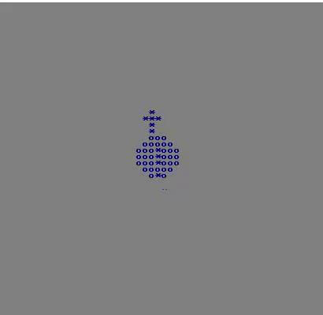
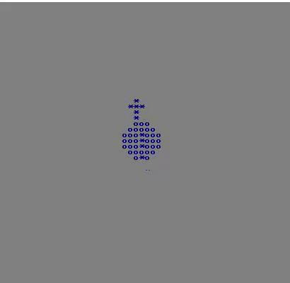

Animation
Posted: 10 Aug 2017 12:43
Hello everyone 
Today I'd like to show an animation I made recently. Obviously, thank you dostips for all those sexy math functions.
Performance on my PC was WAYYY better than GIF demonstrates....

Today I'd like to show an animation I made recently. Obviously, thank you dostips for all those sexy math functions.
Performance on my PC was WAYYY better than GIF demonstrates....

Code: Select all
@echo off & setlocal enableDelayedExpansion
set /a "width=50 - 1", "height=50 - 1"
for /l %%a in (0,1,%width%) do set "widthBuffer=!widthBuffer! "
for /l %%a in (0,1,%height%) do ( set "_[%%a]=%widthBuffer%" )
mode con: cols=52 lines=52
REM Define Math functions
set /a "PI=(35500000/113+5)/10, PI_div_2=(35500000/113/2+5)/10, PIx2=2*PI, PI32=PI+PI_div_2"
set "_SIN=a-a*a/1920*a/312500+a*a/1920*a/15625*a/15625*a/2560000-a*a/1875*a/15360*a/15625*a/15625*a/16000*a/44800000"
set "SIN(x)=(a=(x * 31416 / 180)%%62832, c=(a>>31|1)*a, a-=(((c-47125)>>31)+1)*((a>>31|1)*62832) + (-((c-47125)>>31))*( (((c-15709)>>31)+1)*(-(a>>31|1)*31416+2*a) ), %_SIN%) / 10000"
set "COS(x)=(a=(15708 - x * 31416 / 180)%%62832, c=(a>>31|1)*a, a-=(((c-47125)>>31)+1)*((a>>31|1)*62832) + (-((c-47125)>>31))*( (((c-15709)>>31)+1)*(-(a>>31|1)*31416+2*a) ), %_SIN%) / 10000"
set "_SIN="
for %%a in ("p1x=22" "p2x=20" "p3x=18" "p4x=16" "p5x=14" "p1y=14" "p2y=14" "p3y=14"
"p4y=14" "p5y=14" "p6x=12" "p6y=14" "p7x=10" "p7y=14") do set %%~a
REM --- END INITIALIZE STAGE -----------------------------------------
REM Infinite loop
for /l %%# in (0 0 0) do ( set /a "angle+=1"
set /a "p1x=20 * !cos(x):x=7 * angle! * !sin(x):x=angle! + width/2"
set /a "p1y=20 * !cos(x):x=7 * angle! * !cos(x):x=angle! + height/2"
set /a "next_p2x=p1x", "next_p2y=p1y", "next_p3x=p2x", "next_p3y=p2y", "next_p4x=p3x", "next_p4y=p3y", "next_p5x=p4x", "next_p5y=p4y", "next_p6x=p5x", "next_p6y=p5y", "next_p7x=p6x", "next_p7y=p6y"
set /a "p7x=p6x", "p7y=p6y", "p6x=p5x", "p6y=p5y", "p5x=p4x", "p5y=p4y", "p4x=p3x", "p4y=p3y","p3x=p2x", "p3y=p2y", "p2x=p1x", "p2y=p1y"
REM Draw our circles, and plot the tail
for /l %%y in (-1,1,1) do for /l %%x in (-1,1,1) do (
set /a "S=(%%x * %%x) + (%%y * %%y) - (1 * 1)", "_3div2=1 / 2"
if !S! geq -1 if !S! leq !_3div2! (
set /a "_y=%%y+p1y", "_x=%%x+p1x", "_x2=%%x+p1x + 1"
for /f "tokens=1-4" %%1 in ("_y !_y! !_x! !_x2!") do set "_[!%%1!]=!_[%%2]:~0,%%3!*!_[%%2]:~%%4!
)
)
for /l %%y in (-3,1,3) do for /l %%x in (-3,1,3) do (
set /a "S=(%%x * %%x) + (%%y * %%y) - (3 * 3)"
if !S! leq 1 (
set /a "_y=%%y+24", "_x=%%x+24", "_x2=%%x+25"
for /f "tokens=1-4" %%1 in ("_y !_y! !_x! !_x2!") do set "_[!%%1!]=!_[%%2]:~0,%%3!o!_[%%2]:~%%4!
)
)
for /l %%a in (2,1,7) do (
set /a "_y=next_p%%ay", "_x=next_p%%ax", "_x2=next_p%%ax + 1"
for /f "tokens=1-4" %%1 in ("_y !_y! !_x! !_x2!") do set "_[!%%1!]=!_[%%2]:~0,%%3!*!_[%%2]:~%%4!
)
REM Display the screen
cls
for /l %%a in (0,1,%height%) do ( echo= !_[%%a]!)
for /l %%a in (0,1,%height%) do ( set "_[%%a]=%widthBuffer%" )
)
exit